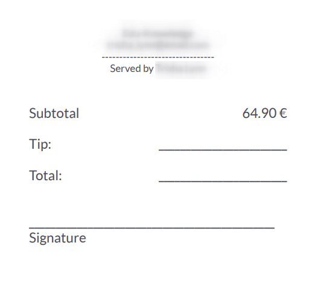

Propinas¶
Dar propina es una prática habitual en varios países. El punto de venta permite dar propinas en tiendas, bares, o restaurantes.
Configuración¶
Para recibir propinas en su PdV, active la función propinas en . En la parte superior de la página seleccione el PdV en el que desea activar las propinas, baje a la sección pago y seleccione la opción propinas. Una vez que habilite la función, agregue un producto de propina en el campo correspondiente y guarde. El producto designado se utilizará como referencia en los recibos de los clientes.

Productos de propina¶
Puede crear productos de propina en cualquier momento. Para hacerlo, ingrese un nombre de producto en el campo producto de propina y haga clic en crear o presione enter. El producto se configura de forma automática para usarse como propina en la pantalla de pago.
Sin embargo, si quiere poder seleccionar el producto de propina en una sesión de PdV, debe activar el ajuste disponible en PdV. Para hacerlo, haga clic en crear y editar… para abrir el formulario de configuración del producto. Después, vaya a la pestaña ventas, seleccione la casilla disponible en PdV`y haga clic en :guilabel:`guardar y cerrar.
Nota
Cuando cree un producto que se utilizará como propina, configure el tipo de producto como consumible para evitar movimientos de inventario innecesarios.
Solo puede seleccionar un producto de propina por PdV, pero puede elegir uno distinto para cada uno.
Propinas mediante una terminal Adyen¶
Si utiliza una terminal de pago de Adyen y quiere habilitar las propinas en ella, seleccione la opción Agregar propina a través de la terminal de pago (Adyen) en los ajustes de propinas.
Propina después del pago¶
Si utiliza un sistema de PdV en un bar o restaurante, puede habilitar la función agregar propina después del pago (específico para Norteamérica). Hacer esto genera una cuenta para imprimir y que el cliente y el mesero deben completar de forma manual. La cuenta indica el valor de la propina que el cliente elige dar después del pago.
Importante
Para usar esta función, el método de pago seleccionado debe tener atribuido un diario bancario.
Agregar propinas¶
Para agregar una propina a una orden, acceda a la pantalla de pago y haga clic en ♥ Propina. Después, introduzca el importe de la propina, haga clic en Confirmar para validarla, finalmente procese el pago.

Un método alterno es seleccionar el producto de propina en la interfaz del PdV para agregarlo al carrito. Cuando lo selecciona el producto se establece de forma automática como una propina, y su valor predeterminado es igual a su precio de venta.
Propinas mediante una terminal Adyen¶
Durante el pago, seleccione Adyen como la terminal de pago y haga clic en enviar para enviar la solicitud de pago al dispositivo. Se le solicita a los clientes introducir el importe deseado de propina en la pantalla de la terminal antes de continuar al pago.
Propina después del pago¶
En el pago, seleccione un método de pago con tarjeta y haga clic en cerrar pestaña. Hacer esto genera una cuenta que el cliente debe completar.
En la siguiente pantalla, haga clic en el porcentaje (15%, 20%, 25%), sin propina, o introduzca el importe de propina que el cliente elige pagar. Luego, haga clic en pagado para avanzar a la siguiente orden.